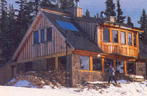
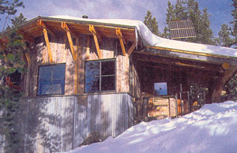
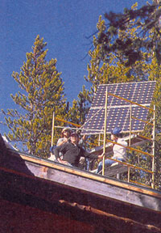

ENERGY & ENVIRONMENT
Solar power isn't just for the sun bolters anymore.
Think you have to live in New Mexico to get enough sun to run all your lights and appliances with photovoltaic panels? Maybe you live in Minnesota or Maine and can't see the sun from November to March. Or in British Columbia or Alaska, where surely temperatures are too frigid to efficiently upkeep solar panels. Well, you just might be unfairly dismissing the solar option. It's time you heard about a new system of panels that operates year-round above 8,000 feet, in one of the coldest, stormiest stretches of the Colorado Rockies. In winter, the panels withstand wind, snow, ice, low light, and temperatures that drop to -40°F.
The power system was designed for the 10th Mountain Division Hut Association, which maintains a network of ski huts-24 in all, 13 looped between Aspen and Vail-that are linked together by cross-country ski trails. A working experiment in solar for extreme weather conditions, the 12-volt DC system has been upgraded several times since it was installed in 1982. And as the photovoltaic (PV) industry evolves, adding on to and upgrading the system is becoming less and less expensive.
Built in the 1940s for the 10th Mountain Division of the U.S. Army, the huts were initially used to train American troops for mountain combat in the Alps during World War II. Each hut sleeps between 16 and 20 people and is about the size of an average family home. Originally, fuel lanterns and candles lit the huts, but as the number of recreational visitors increased, disposal of hundreds of lantern-sized propane tanks became problematic for the not-for-profit 10th Mountain Division Hut Association. When one of the huts burned in a fire started by a candle, the organization made the decision to install new lights. PV was not an obvious choice, given backcountry skiers' interest in preserving the pristine and rustic look of the remote but system. The solar panel, though efficient, is certainly not rustic-looking. But in the end, practicality won out over aesthetics.
Instructors Johnny Weiss and Ken Olson of Solar Energy International (SEI), a nonprofit, renewable energy education and training organization, designed a system for the huts that is able to endure severe conditions, but is otherwise not so different from any other solar power system.
"The only real difference is in the voltage," says Scott Ely of SunSense, a one-man solar installation company based in Snowmass, Colorado, that has an ongoing maintenance contract with the Hut Association. "When the cells are hot, they lose voltage." In other words, desert systems need higher voltage panels than cold weather systems do.
The 10th Mountain system relies on one to six panels per hut. Originally, the huts were for winter use only; so SunSense, along with SEI students and instructors, mounted panels flush with the side of the house. (SEI has kept its students involved in the solar but project, using upgrades and maintenance as teaching opportunities.)
The original panel installations worked well with snow reflection and low winter sun. But now the huts have been given U.S. Forest Service permits for summer use, and so the panels are being retrofitted and mounted on poles to accommodate the higher summer sun angle.
When it became apparent that the panels needed to be retrofitted, 10th Mountain considered some other alternative energy options, including wind mills. But again, consideration for the quiet beauty of the area brought them away from noisy wind generators and back to quieter solar.
The huts get the heaviest use during periods of least sun and when the batteries, which are deep-cycle golf-cart models, are the coldest. Most of the huts use lead-acid batteries, though two systems use ni-cads and nickel irons. The batteries are stored inside the huts or inside adjacent storage rooms.
When 10th Mountain installed the lights, which are the only appliances in the huts (heat comes from woodstoves), it chose to place compact fluorescent lights in lanterns. Interestingly, the compact floures cents are now being replaced with 12-volt incandescent low-wattage bulbs in lanterns. Because of the high energy efficiency of the compact fluorescent, this change may be seen in the renewable energy community as a technological step backward. Ely defends the decision, however, saying the incandes cents eliminate a ballast that comes with low-wattage floures cents. The floures cents are also more expensive in the short run and, despite what manufacturers are touting as the new softer and dimmable fluorescent, the fact remains that the quality of light is better with incandes cents. But most important for these circumstances, claims Ely, the incandes cents guarantee fewer cold-weather start-up problems.
Ely estimates that the cost of complete solar installation ranged from $5,000 to $8,000 per hut. Installing a similar system on a home could be comparable. "We do this all the time for remote homes," Ely says. Installing this system on a home, however, would require the addition of an inverter to transform DC into AC for AC appliances (the mountain huts use only DC). Ely says the cost of the inverter would bump up the installation price by a few thousand dollars.
To maintain the system, SunSense visits the huts twice a year to tighten connections, add water, and equalize batteries. Occasional upgrades have involved moving battery boxes around to better locations, installing summertime panels, changing bulbs from compact fluores cents to incandes cents, and, most significantly, changing the power centers. Ely says for safety reasons all the huts were retrofitted with Anaconda power centers, which allow everything-meters, breakers, etc.-to be centrally located in one box. The cost, he adds, is less than $10 a year per but to maintain the system (not including upgrades).
What this extreme experiment has shown, notes Weiss, is that harsh conditions do not detract from the easy, low-cost maintenance of solar. "There are no moving parts in this technology," he explains. "Nothing wears out. It's simply moving electrons."
One of the benefits of the mountain huts' power system is that it has helped popularize the technology. Says Weiss, "We've certainly seen it become very much mainstream. This is not backwoods technology anymore; there's no longer anything experimental about it. It's the same kind of technology that people put on their homes and cabins." Weiss's solar students use the system for hands-on learning, and thousands of skiers visit the huts each year.
"The public has to turn the system on and off and [so they] see the components," notes Jarod Trow, head of operations for the 10th Mountain Division Hut Association. "Underlying this is the hope that people will take this experience back home and [that it will] make them more energy conscious."
To learn more about PV systems for extreme weather conditions, or for information on the 10th Mountain Division but system, contact:
• SunSense Solar Electric Systems , P.O. Box 301, Carbondale, CO 81623. (970) 928-9272
• Solar Energy International , P.O. Box 715, Carbondale, co 81623. (970) 9638855
• 10th Mountain Division Hut Association , 1280 Ute Ave., Aspen, CO 81611.(970)-925-5775
|
 After reading by gas lamps and candles for 50 years, hut visitors are finally able to turn on the lights |
 Originally mounted flush with the roof, the PV panels are now being retrofitted and mounted on poles to take advantage of the higher summer sun. |
 PV power is clean, efficient, and has no moving parts. |